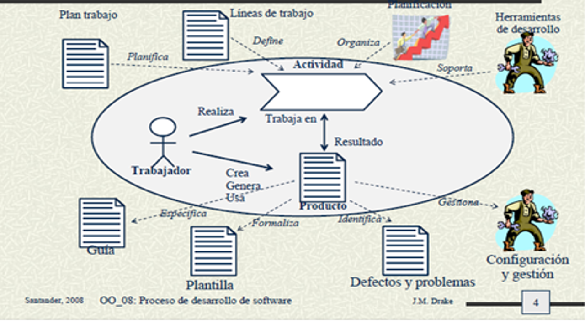

|
|
|
|  |
Los elementos basicos de un proceso de desarrollo de software: primero que todo se definira los papeles que realizara el equipo de trabajo, es decir se elaborara un plan de trabajo, las actividades o tareas que desarrollaran y el producto final.
En un alto nivel las actividades son llamadas fases del proceso en esta fase incluye la especificacion y análisis, en el bajo nivel se determinan las tareas mas concretas como crear los diversos diagramas, escribir codigo etc.
Los productos seran los llamados documentos o información como resultado de las actividades
Por último el producto que es el sistema que se desarrolla, debemos tener en cuenta que se presentaran fases intermedias donde se generara una gran cantidad de documentos llamados documentos intermedios